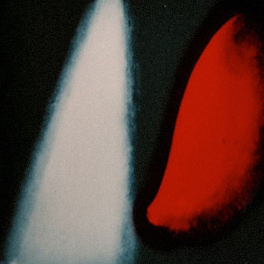

LOOK AT
THE SOUND
Thesis
by Ieva Valule2014
4.1 Early abstract film industry
Abstract film can be described as a sub-genre of the experimental films. Most likely the abstract film is used to visualize music during musical performance, but this term is used also concerning other disciplines of art. Some of the earliest motion graphics or abstract shapes were produced in Germany already in the early 20's. By that time this genre was introduced as "Absolute Film". It was a category of films that was made to show different approaches and technics of abstractions in the motion without a particular narrative. They were made to create an emotional experience and new qualities of motion and rhythm in the cinema and music. Those images were absolutely non-objective. As film historian William Moritz [20] has noted that the history of abstract film is a culmination of a trend that begins with Louis-Bertrand Castel’s [21] attempt to create visual music in. Also this genre was strongly influenced by discovery of the synesthesia.
Surprisingly, almost none of the early avant-garde films have been restored, and many of the further mentioned works are hardly available in common distribution.
Surprisingly, almost none of the early avant-garde films have been restored, and many of the further mentioned works are hardly available in common distribution.
The coloured rhythm is by no means an illustration or an interpretation of a musical piece. It is an autonomous art form, although based on the same psychological data as music… The basic element of my dynamic art is the coloured visual form, similar to the role of sound to music.
This element is determined by three factors:
1 – The specific (abstract) visual form,
2 – Rhythm, meaning the movement and transfiguration of this form,
3 – Colour. [22]
This element is determined by three factors:
1 – The specific (abstract) visual form,
2 – Rhythm, meaning the movement and transfiguration of this form,
3 – Colour. [22]
[20] American film historian, specialized in visual music and experimental animation. (1941 – 2004)
[21] Creator of “Ocular Harpsichord”, extensive description can be found in thesis chapter of “3.1 “Instruments” for music performance visualizing”.
[22] Noguez , D., “Cinéma: theorie, lectures”. Klinksieck, , 1978. p. 275.
[21] Creator of “Ocular Harpsichord”, extensive description can be found in thesis chapter of “3.1 “Instruments” for music performance visualizing”.
[22] Noguez , D., “Cinéma: theorie, lectures”. Klinksieck, , 1978. p. 275.
4.2 Walter Ruttmann
Walter Rutmann (1887-1941) was a painter, graphic designer and animator; he was also an enthusiastic cellist and violinist. In the 20's Ruttmann was a forerunner of post-World War II experimental films. He was born in Germany and for all his life he kept working for the German Film industry. His first abstract short films were "Lichtspiel: Opus I" (1921) and "Opus II" (1923) (Figures 21 and 22). Those were the first widely acknowledged experiments of new abstract forms in the early abstract film genre. Soon Ruttmann found a lot of associates that shared his passion for the abstract explorations and music performance. Ruttmann was the center of the rising avant-garde art and music scene. Projections of his motion pieces during symphonic music concerts were considered to be very non-conventional and innovative by the 20's in Germany. However Ruttmann was actively involved making propaganda for Hitler. His work for the Third Reich raises a lot of questions, but even so he produced a lot of un-fascist series of films. Also his political believes can be blamed to be the cause why the popularity of his work stopped flourishing right after the war.
With his ear for the narrative as well as the visual, Ruttmann works on a kind of audio-art. His formulations can also designate structure on the basis of musical points of departure such as pitch and rhythm. [23]
With his ear for the narrative as well as the visual, Ruttmann works on a kind of audio-art. His formulations can also designate structure on the basis of musical points of departure such as pitch and rhythm. [23]
His work was a total abstraction, though it is really questionable whether he was the first abstract animator. Already futurists and Russian avant-gardists challenged themselves with this methodology before Opus I in 1921. His animations were crafted in the method of "tinting the film". This method was invented long before a color film was invented. "Ruttmann's craft" was to layer multiple color layers in order to assemble a psychedelic experience. His method of working was so complex that it would require handpicking and collecting hundreds of layers in order to project a short film.
Knowledge of a graphic design and painting really became an advantage in his professional practice; he could make abstract art "to move" with his sense of color and space. Further on a lot of contemporary artists were inspired by the above mentioned abstractions, for example Andy Warhol's Exploding Plastic Inevitable in 1967 (Figure 23).
Knowledge of a graphic design and painting really became an advantage in his professional practice; he could make abstract art "to move" with his sense of color and space. Further on a lot of contemporary artists were inspired by the above mentioned abstractions, for example Andy Warhol's Exploding Plastic Inevitable in 1967 (Figure 23).
[20] American film historian, specialized in visual music and experimental animation. (1941 – 2004)
[21] Creator of “Ocular Harpsichord”, extensive description can be found in thesis chapter of “3.1 “Instruments” for music performance visualizing”.
[22] Noguez , D., “Cinéma: theorie, lectures”. Klinksieck, , 1978. p. 275.
[21] Creator of “Ocular Harpsichord”, extensive description can be found in thesis chapter of “3.1 “Instruments” for music performance visualizing”.
[22] Noguez , D., “Cinéma: theorie, lectures”. Klinksieck, , 1978. p. 275.

Figure 21. Walter Ruttmann's Lichtspiel - Opus 1. 1921
Still from the reconstructed color version.
Figure 22. Walter Ruttmann's Lichtspiel - Opus 2. 1921
Another still from the reconstructed color version.
Figure 23. Andy Warhol - Exploding Plastic Inevitable. 1967
Still from the video.
4.3 Hans Richter
Also Hans Richter (1888-1976) is one of the first pioneers of the abstract film. Particularly the movie Rytmus 21 (Figure 24) that lasts only 3 minutes was a significant happening of a film production in the early 20's. By this time the film industry in all world played a major economical and cultural role.
Rytmus 21 was more of a meditative piece with only figurative representations. By that time it was something brand-new to show natural movements by representations of geometric shapes. Those representations could be flowers, people or birds, but in fact they were just simulation of pure geometry of circles, lines and squares. Similarly as Ruttmann, Richter is using black background for the animation, the purpose of it is really practical - in this way separated elements that are projected on the canvas would blaze leaving the background dark. This way the animation would stay floating in the “air”.
Rytmus 21 was more of a meditative piece with only figurative representations. By that time it was something brand-new to show natural movements by representations of geometric shapes. Those representations could be flowers, people or birds, but in fact they were just simulation of pure geometry of circles, lines and squares. Similarly as Ruttmann, Richter is using black background for the animation, the purpose of it is really practical - in this way separated elements that are projected on the canvas would blaze leaving the background dark. This way the animation would stay floating in the “air”.
Later on Richter started approaching an animation and music visualizing in less abstract way. Elements that he used in animations were more representational and figurative. Also an actual script with a narrative replaced the randomness of the narrative. But in this early point in his career, he was fiercely excited by the "new medium" and the radical abstraction. He has been a big inspiration for others to experiment with graphical rhythms and representations in the music.
The film is a play of relationships of light. The relationships of light have both qualitative and quantitative character: degree of brightness, proportions, etc. [24]
The film is a play of relationships of light. The relationships of light have both qualitative and quantitative character: degree of brightness, proportions, etc. [24]
[24] http://painters-table.com/link/getty-iris/painters-films
Figure 24. Hans Richter - Rhythmus 21. 1921
Stills and filmstrips from video material.
4.4 Viking Eggeling
Eggeling (1880-1925) was one of the most influential and dedicated friend and companions of Richter. Richter even credited his beloved friend for an idea of exploring the possibilities of abstract animation in his work. At the first glance their works seem to be really similar, but Eggelling had an extraordinary preference for working only with the lines and curves. He seems to simplify the idea of representations even more then Richter. He would draw, un-draw, redraw and erase his lines during the animation process. He believed that the lines, stripes and curves say much more than any language or sound. His main goal was to rebuild men’s vision into a spiritual language and perception. He wanted to illustrate the most complex emotions and thoughts with the most simplistic form of geometry.
During the years 1915 to 1917 Eggeling had started to work with the picture scrolls of "Horizontal — Vertical Orchestra" and "Diagonal Symphony" (Figures 25 and 26) Richter accompanies him and later recalls: "In these scrolls we tried to build different phases of transformations as if they were phrases of a symphony of fugue". [25]
During the years 1915 to 1917 Eggeling had started to work with the picture scrolls of "Horizontal — Vertical Orchestra" and "Diagonal Symphony" (Figures 25 and 26) Richter accompanies him and later recalls: "In these scrolls we tried to build different phases of transformations as if they were phrases of a symphony of fugue". [25]
“Horisontal - Vertikal Orkester” is lost and was never shown to the public. The film “Symphonie Diagonale” (“Diagonal symphony”) was made with a simple cutout technic where he used the shapes of tin foil, filmed frame by frame. Several different copies of “Symphonie Diagonale” are still existent. He also was one of the first artists to introduce a visual polyphony. He concentrated his imagery movement in the way that it would not only compliment one aspect of music but it would have various pictorial themes and motifs at the same time.
[25] Braziller, G.,“My Experience with Movement in Painting and in Film”. The Nature and Art of Motion. New York: George Braziller, 1965. p. 144.

Figure 25. Viking Eggeling - Horizontal-vertical Orchestra. 1921
Fragment from from "De Stijl" magazine volume 4, nr 7
Figure 24. Hans Richter - Rhythmus 21. 1921
Stills and filmstrips from video material.
4.5 Are abstractions meaningful?
I don’t think that the abstract and personal interpretations automatically can be perceived as something not purposeful or random. Abstract video art seeks to break away from the traditional representation of physical objects and ideas. It explores the relationships of forms, colors and music, whereas more traditional representations tend to tell a story by using recognizable imagery. Abstract art forms are giving value to the pure expressive mechanisms that comes from the colour and form itself.
Actually this form of art is really similar to the way how music is composed. In a musical composition each note and melody represents some concept. Also notes and melodies or any other expression of music serves as an abstract visualization of traditional concepts.
Actually this form of art is really similar to the way how music is composed. In a musical composition each note and melody represents some concept. Also notes and melodies or any other expression of music serves as an abstract visualization of traditional concepts.
In the abstract video art image comes as close to musical form as possible. By taking a variety of abstract elements the concept is to rearrange visual motifs so that the abstractions would form a whole. During the last century this method of creating art brought one of the major revolutions in the fine arts.
In the 19th Century German philosopher Nietzsche formulated that abstract film is “the spirit of music”. Also I believe that these non-narrative abstractions take music to its absolute essentials. Keeping that in mind, I would prefer this technic over generative and impersonal tools.
In the 19th Century German philosopher Nietzsche formulated that abstract film is “the spirit of music”. Also I believe that these non-narrative abstractions take music to its absolute essentials. Keeping that in mind, I would prefer this technic over generative and impersonal tools.